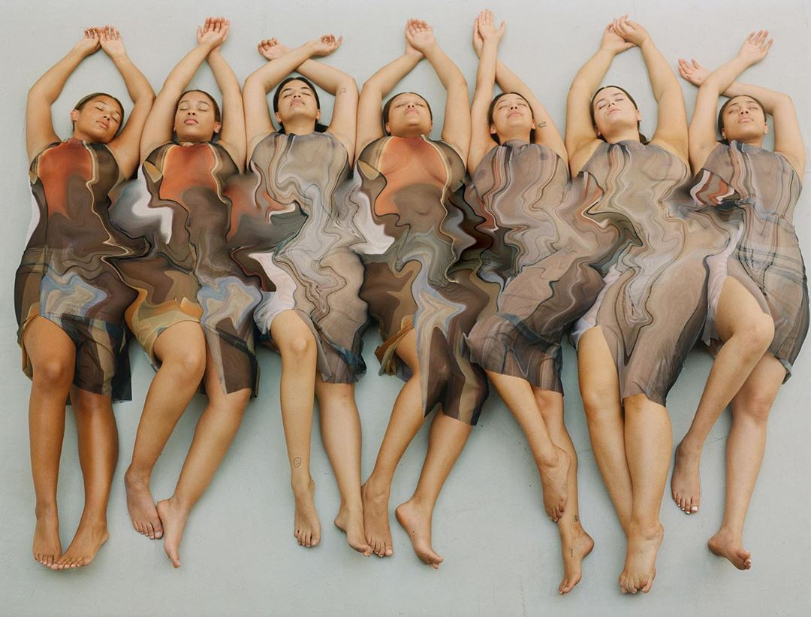
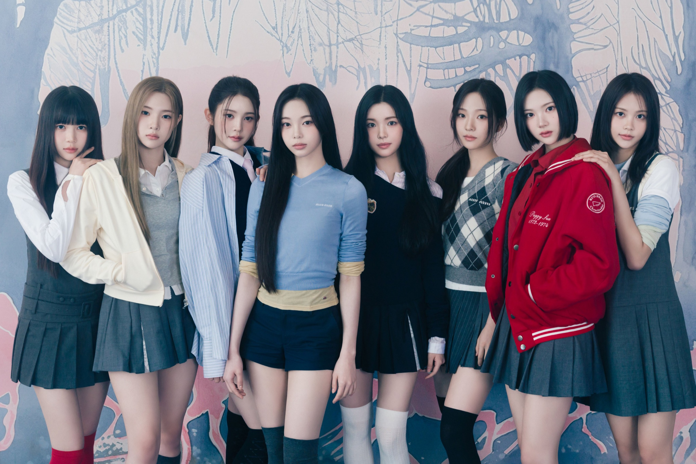

2025.02The Chase
몽환·신비 / 모험의 시작
HEARTS2HEARTS · 미니 3집 비주얼 제안
서로 다른 꿈을 꾸었는데,
깨어 보니 같은 장면이 남아 있었다.
타이틀꿈에서 만나
사운드리퀴드 D&B × 트랜스 팝
비주얼쿨 블루 × 몽환 동화 × 기억 오류

한 장으로 보는 앨범


01 / WHY NOW
공식 발매와 멤버 발언에서 반복된 강점은 남기고, 이미 사용한 장르·공간·정서를 다시 쓰지 않는다.
몽환·신비 / 모험의 시작

학교·요정 / 밝은 자신감

하우스·교복 / 정제된 시크

하트 공장 / 귀여운 반항

오키나와·수학여행 / 함께

밤·실내 / 공유된 내면
공식 팀 정의의 ‘진심 어린 메시지’와 ‘더 큰 우리’, 1주년 인터뷰의 ‘당당함 속 솔직함’을 하나의 시각 사건으로 바꾼다.
〈FOCUS〉와 〈RUDE!〉에서 이미 하우스를 서로 다른 온도로 소화했다. 다음 타이틀은 리퀴드 드럼앤베이스와 트랜스의 상승감으로 8인 군무의 속도를 바꾼다.
〈STYLE〉의 학교, 〈FOCUS〉의 하이틴, 〈Lemon Tang〉의 수학여행 뒤에는 밤의 방·온실·복도처럼 내면을 투사할 실내 공간이 필요하다.
02 / VISUAL WORLD
유행을 그대로 복사하지 않는다. 2026의 세 흐름을 하츠투하츠의 몽환성, 솔직함, 8인 관계에 맞게 기능으로 바꾼다.
푸른 링·투명 네일·관자놀이 반사광을 한 얼굴에 한 곳씩만 둔다.
날개·왕관 대신 실제 유리, 젖은 흙, 얕은 안개로 꿈의 경계를 만든다.

셔터 1/8초로 얼굴은 선명하게, 팔과 오간자 끝만 세 겹의 잔상으로 기록한다.
8인을 일렬로 눕히고 손·발·시선만 다르게 두어 ‘공유된 꿈’을 설명 없이 보인다.
한 컷에 초현실 장치 하나만 둔다. 모든 것을 이상하게 만들지 않는다.
분리된 꿈이 후렴마다 합쳐지도록 인원 구성을 음악 구조와 맞춘다.
익숙한 발레코어, 요정 코스튬, 사이버 Y2K는 〈The Chase〉와 경쟁하므로 쓰지 않는다.
03 / SOUND
연속된 하우스에서 빠져나오되 〈The Chase〉의 몽환성과 〈Lemon Tang〉의 밝은 에너지는 버리지 않는다. 리퀴드 드럼앤베이스의 속도 위에 트랜스 신스와 선명한 한국어 훅을 얹는다.
TITLE TRACK
“눈을 감으면 네가 먼저 와 / 같은 꿈의 문을 열어 놔”
장르리퀴드 D&B · 트랜스 팝
속도160 BPM / 하프타임 벌스
핵심 악기유리 벨 · 롤링 브레이크 · 코러스 패드
킬링 포인트8인 라운드 보컬 → 전원 유니즌
드럼앤베이스의 속도와 트랜스의 상승감을 쓰되, 강한 베이스보다 한국어 멜로디와 8인 합창을 먼저 들리게 한다.
벨 소리가 좌우로 이동하고, 마지막 한 박자에 모든 시계가 03:17로 멈춘다.
TRACK LIST
앰비언트 인트로 / 여덟 숨소리가 한 코드로 합쳐진다.
리퀴드 D&B / 서로 다른 꿈에서 같은 사람을 찾는다.
미드템포 R&B / 같은 색을 서로 다르게 기억한다.
브로큰 비트 팝 / 솔직한 마음을 농담처럼 건넨다.
트랜스 팝 / 밤에만 통하는 여덟 가지 약속.
클로즈 R&B / 꿈이 끝난 뒤에도 남은 온도를 확인한다.
04 / MUSIC VIDEO
CG로 꿈을 설명하지 않는다. 강제 원근 세트, 움직이는 벽, 거울, 장노출을 실제 촬영 장치로 설계한다.
SCENE 01 / 06
00:00 — 00:13
여덟 개의 파란 방. 크기가 다른 침대와 문으로 강제 원근을 만들고, 알람이 모두 03:17에 멈춘다.
0103:17서로 다른 방의 알람이 한 시각에 멈춘다.
 02첫 번째 꿈
02첫 번째 꿈예온이 물속처럼 흔들리는 커튼을 통과한다.
03밤의 온실각자의 소품이 같은 온실 바닥에 떨어진다.
04기억 오류JUUN과 IAN의 동작이 한 박자 늦은 잔상으로 남는다.
벽이 접히며 여덟 방이 하나의 원형 세트가 된다.

06깨어난 증거모두의 손에 같은 파란 실이 남고 설명 없이 끝난다.
DIRECTING PROTOTYPE
세트·빛·움직임을 고르면 실제 촬영 지시문과 화면이 함께 바뀐다.
파란 방 / 달빛 / 정지24mm 고정 카메라. 침대와 문 크기를 달리해 깊이가 틀어진 방을 만들고 인물만 정면으로 세운다.
05 / JACKET
A
ROOM VER.
1인과 2인 중심. 여덟 방의 배치와 소품은 다르지만 알람 시각, 파란 실, 침대 높이는 이어진다.
B
OUTLANDS VER.
4＋4와 8인 중심. 얕은 안개와 젖은 식물만 사용하고, 동화 의상·요정 소품은 제거한다.
C
ERROR VER.
개인 클로즈업 중심. 한 얼굴에 잔상은 한 번만, 반짝이는 장식은 눈·귀·손 중 한 곳만 둔다.
뷰티 방향 · 유리 한 점, 파란 반사광HAIR & MAKE-UP
피부결이 보이는 세미 매트유리알 피부 표현 배제
눈데님 블루 라이너 2~5mm8인 동일 형태 배제
입술본래 입술색 + 투명 광파란 립·실버 립 배제
헤어젖은 잔머리 또는 투명 실리본·왕관·별핀 배제
06 / 멤버별 워드로브
8장 모두 같은 화보, 같은 반신 프레이밍, 같은 광원 계열로 통일했다. 그 위에 하츠투하츠의 부드러운 인상과 〈같이 꾼 꿈〉의 방→숲→기억 오류를 연결하는 아이템·원단·피팅 기준을 멤버별로 지정한다.
ONE WARDROBE RULE
밀크·새벽 안개·꿈빛 블루를 기본으로, 각 멤버에게 기능 디테일 하나만 다르게 준다. 얇은 니트와 쿠프로 부드러운 인상을 만들고, 반투명 립스톱·포켓·스트랩·반사 봉제로 “꿈을 기록하러 나온 옷”의 구조를 더한다.
실루엣은 2·2·2·2로 나누고, 손·발·옷자락이 하나의 흐름을 만들게 한다.
니트·쿠프로 부드러운 베이스만 착용한다. 기능 오버레이는 벗어 침대 옆에 둔다.
소프트 50mm · 피부 톤 우선동일 베이스 위에 반투명 립스톱 포켓, 스트랩, 후드 패널을 한 개씩 추가한다.
35mm · 젖은 표면 · 실제 움직임오버레이를 뒤집거나 여밈을 한 칸 어긋나게 입는다. 보라색·반사 소재는 한 곳만 노출한다.
85mm · 1/8초 · 디테일 클로즈업장식 없이 어깨선·허리선·전체 비율만 확인한다. 정면·측면 폴라로이드와 8인 배열을 비교해 실루엣이 겹치는 룩을 교체한다.
쿨 블루 소프트광과 코발트 직광에서 비침·모아레·반사량을 확인한다. 흰 원단의 블루 캐스트와 투명 소재의 피부 노출을 RGB 모니터로 점검한다.
후렴 8카운트, 회전, 바닥 동작을 촬영한다. 암홀 들뜸, 드레이프의 얼굴 가림, 트라우저 밑단과 신발 충돌음을 수정한다.
ROOM 베이스를 기준으로 OUTLANDS 오버레이와 ERROR 뒤집기만 추가한다. 세 버전을 새 옷처럼 만들지 않아 한 앨범의 연속성을 유지한다.
굽 최대 40mm, 발등 또는 발목 스트랩 필수. 롱 헴은 무대화 착용 후 바닥에서 2cm 이상 띄우고 멤버별 복제 의상 1벌을 준비한다.
원단 로트, 단추·스트랩 위치, 소매 접힘, 헤어 잔머리를 착장별로 촬영한다. MV 픽업 촬영과 재킷 리터치에서 동일 상태를 재현한다.
이미지 규칙 · 동일 화보 8장 / 반신 프레이밍 / 눈높이 통일 / 멤버별 착장 명세와 피팅 기준 병기
07 / OBJECT & ROLLOUT
MAIN EDITION / 꿈 기록철
반투명 트레이싱 필름 8장을 멤버 순서대로 겹치면 단체 사진과 03:17이 완성된다. 수집을 위해 관계를 쪼개지 않고, 전원 세트를 기본으로 둔다.
포토북112쪽 / 방 → 온실 → 아침
핵심 구성잔상 필름 8장 전원 세트
포토카드개인 1종 + 2인 1종
재질무광지 · 트레이싱지 · 은박 1도
설명 없이 같은 시각을 가리키는 여덟 알람 이미지.
8 정지 이미지멤버별 방에서 발견된 물건과 한 문장.
8 세로 필름파란 방의 벽이 접혀 온실이 되는 콘셉트 필름.
45초 필름잠든 방, 같은 숲, 기억 오류 재킷 순차 공개.
3 사진 세트팬이 선택한 두 색을 겹쳐 꿈 기록 카드를 만든다.
웹 생성기8인 라운드 보컬이 한 줄씩 쌓이는 아카펠라 티저.
24초 사운드여덟 방이 하나의 원형 세트로 접히는 본편.
본편 공개원형 카메라 한 대로 8인 대형 변화를 끊지 않고 촬영.
퍼포먼스 필름08 / 실행 설계
SM Creative Visual 공고의 업무를 페이지 구조 자체로 증명한다.
팀 서사와 발매 흐름에서 ‘공유된 내면’이라는 다음 장을 도출했다.
WHY NOW → VISUAL WORLD쿨 블루, 실제 공간과 불가능한 흔적이라는 단일 규칙으로 화면과 패키지를 묶었다.
HERO → JACKET → OBJECT버전별 인원, 렌즈, 시점, 조명, 배제 요소까지 촬영 가능한 언어로 적었다.
ROOM / OUTLANDS / ERROR하나의 코어 안에서 8인의 소재·실루엣·기능 디테일을 나누고, 피팅·카메라·안무 테스트 기준까지 설계했다.
WARDROBE → FITTING티저, 웹 생성기, 사운드, 퍼포먼스 필름이 같은 03:17 서사를 쌓도록 설계했다.
D−21 → D＋03하츠투하츠의 다음 장은 더 큰 세계가 아니라,
서로의 안쪽에서 발견한 같은 장면이다.